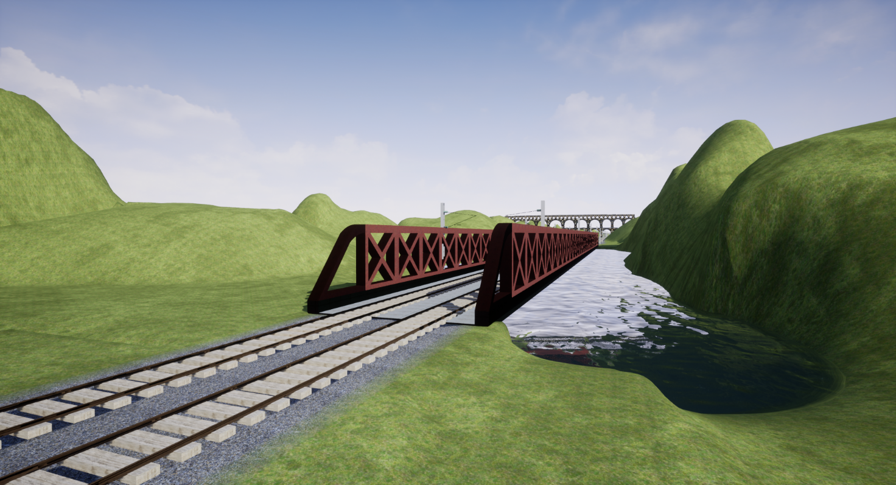
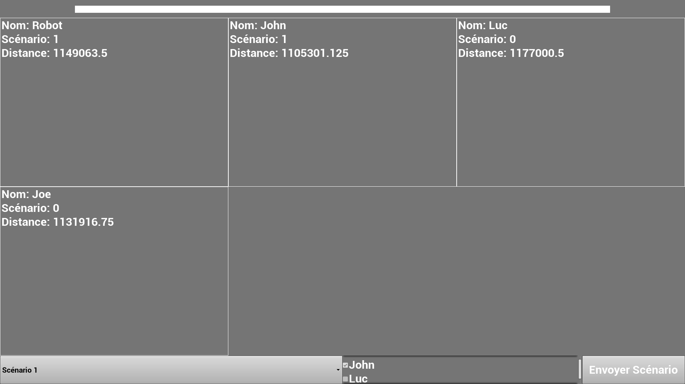

Pour cela, j’ai utilisé Unreal Engine 4 dont j’ai l’habitude de me servir personnellement ainsi que Blender pour la 3D et Gimp pour la 2D.
Pour la possibilité de jouer en réseau, j’ai utilisé le système de réseau par défaut d’Unreal Engine 4.
J’ai créé un menu principal où l’on peut renseigner son nom, héberger une partie ou la rejoindre.
Un menu en jeux pour choisir entre instructeur et conducteur.
J’ai créé un Acteur Rails que l’on peut placer dans le niveau et qui contient une courbe en 3D que l’on peut modifier et qui déclenche une génération du visuel comprenant les rails (que j’ai dû modéliser) qui se courbe en fonction de la courbe, des traverses (qui sont des cubes déformés), des poteaux caténaires (transmis par Monsieur Erik GARDON) dont on peut régler si on les veut à gauche ou non, ou à droite ou non.
Il existe aussi les rails d’aiguillage qui changent de courbe selon son état.
On peut sélectionner les rails d’avant et d’après afin de pouvoir passer de l’un à l’autre.
Chaque changement sur la courbe entraine une nouvelle génération du visuel des rails qui bloque le programme pendant la durée de celle-ci.
Pour gérer les déplacements de la locomotive j’ai créé un composant pour les mouvements qui prend une courbe et ajoute une distance parcourue selon sa vitesse et le place visuellement.
Pour répliquer ses mouvements j’ai créé un Timer qui à intervalles réguliers met à jour son positionnement chez les autres utilisateurs.
La courbe sur laquelle le train est placé est générée à partir de toutes les courbes contenues dans chaque portion de rails.
Ce qui permet d’avoir une distance exacte à tout moment sur le circuit.
Et un changement d’état sur l’aiguillage recalcule la courbe et replace le train à la même distance sur la courbe renouvelée.
J’ai dû réaliser un niveau comprenant un circuit à double voies en BAL (block automatique lumineux) à partir d’un plan que l’on m’a fourni détaillant un circuit de 16km, la signalisation le long des voies par km ainsi que les décors à franchir (ponts, tunnels, gares).
L’objectif de ce stage est d’avoir un simulateur employable par 6 stagiaires, transportable et qui sera facilement exploitable par les formateurs et devra pouvoir être opérationnel sur un seul écran sans équipement externe de type joysticks ou boutons et devra comporter au moins un scénario (dû au manque de temps).
Il existe deux types de personnes dans le simulateur, les conducteurs et les instructeurs.
Les instructeurs doivent pouvoir lancer des scénarios préenregistrés sur un ou des conducteurs de leur choix.
Les conducteurs doivent être aux commandes d’une cabine de train individuelle, chacun d’eux se retrouve seul sur le circuit.
Pour cela, j’ai utilisé Unreal Engine 4 dont j’ai l’habitude de me servir personnellement ainsi que Blender pour la 3D et Gimp pour la 2D.
Pour la possibilité de jouer en réseau, j’ai utilisé le system de réseau par défaut d’Unreal Engine 4.
J’ai créé un menu principal où l’on peut renseigner son nom, héberger une partie ou la rejoindre.
Un menu en jeux pour choisir entre instructeur et conducteur.
J’ai créé un Acteur Rails que l’on peut placer dans le niveau et qui contient une courbe en 3D que l’on peut modifier et qui déclenche une génération du visuel comprenant les rails (que j’ai dû modéliser) qui se courbe en fonction de la courbe, des traverses (qui sont des cubes déformés), des poteaux caténaires (transmis par Monsieur Erik GARDON) dont on peut régler si on les veut à gauche ou non, ou à droite ou non.
Il existe aussi les rails d’aiguillage qui changent de courbe selon son état.
On peut sélectionner les rails d’avant et d’après afin de pouvoir passer de l’un à l’autre.
Chaque changement sur la courbe entraine une nouvelle génération du visuel des rails qui bloque le programme pendant la durée de celle-ci.
Pour gérer les déplacements de la locomotive j’ai créé un composant pour les mouvements qui prend une courbe et ajoute une distance parcourue selon sa vitesse et le place visuellement.
Pour répliquer ses mouvements j’ai créé un Timer qui à intervalles réguliers met à jour son positionnement chez les autres utilisateurs.
La courbe sur laquelle le train est placé est générée à partir de toutes les courbes contenues dans chaque portion de rails.
Ce qui permet d’avoir une distance exacte à tout moment sur le circuit.
Et un changement d’état sur l’aiguillage recalcule la courbe et replace le train à la même distance sur la courbe renouvelée.
J’ai dû réaliser un niveau comprenant un circuit à double voies en BAL (block automatique lumineux) à partir d’un plan que l’on m’a fourni détaillant un circuit de 16km, la signalisation le long des voies par km ainsi que les décors à franchir (ponts, tunnels, gares).
Monsieur Erik GARDON m’a transmis tous les panneaux et décors en 3D avec dans leur nom leur point kilométrique.
Pour les placer, j’ai créé un « Acteur » pouvant prendre un objet à placer à la distance indiquée, le déplaçant ainsi au bon endroit, il peut aussi indiquer la distance à laquelle il se trouve.
Je suis allé à Colas Rail de Lyon pour voir différentes locomotives de fret et essayer le simulateur existant pour voir ses fonctionnalités ainsi que celles des trains.
J’ai modélisé la cabine du train et son intérieur avec des cadrans, leviers, boutons
Une image de décors ci-dessous:

Les conducteurs n’ayant pas forcément d’expérience, ou étant peu à l’aise avec un ordinateur, ils préfèrent une utilisation de la souris plutôt que du clavier.
La souris est affichée à l’écran et on peut « Cliquer » sur les boutons ainsi que sur les interrupteurs.
Pour les leviers, on le sélectionne par un clic, le socle se met en surbrillance, puis l’utilisateur peut déplacer le levier grâce à la molette.
Pour le levier de traction, le programme vérifie s’il est proche de « 0 » pour le remettre à cette valeur automatiquement. Cela permet d’être sûr que la traction soit à « 0 » ainsi que de demander un plus grand mouvement de molette pour s’en éloigner. Ce qui peut s’apparenter à la résistance du levier lorsqu’il est à cette position dans un vrai train.
J’ai créé des matériaux lumineux, clignotants et les motifs de boutons pour réaliser les instruments de la cabine.
Lors d’une partie, l’instructeur voit un menu divisé par le nombre de conducteurs dans lequel on peut voir leur nom, leur distance actuelle, le scénario en cours et quand on clique dessus la vue du conducteur dans la partie en cours s’affiche (voir l’image ci-dessous).
Exemple avec 4 conducteurs:

En bas à gauche on peut sélectionner un scénario, à sa droite on peut sélectionner les conducteurs qui recevront le scénario et en appuyant sur le bouton « Envoyer Scénario » cela leur lance le scénario sélectionné.
Lors d’un scénario les actions des conducteurs sont enregistrés sous leur nom et daté en indiquant s’ils ont réussi certaine action attendue ou non dans des fichiers textes sur les ordinateurs des instructeurs.
Tous les vendredis, j’avais une réunion avec Monsieur Erik GARDON et le client ASP où l’on montrait, discutait de l’avancement du projet et des futurs ajouts.
A chaque avancée du programme, lors de l’ajout d’une fonctionnalité, je la testais en jeu avec un conducteur et un instructeur (virtuels).
Pour les sauvegardes, j’ai créé un fichier bat qui me permet de faire des backups en compressant les fichiers et en excluant les sauvegardes et binaires qui ne servent à rien pour la sauvegarde et le zip à pour destination le OneDrive de Colas. Je le lançais une fois par jour le soir.
J’ai privilégié le fait d’avoir des fonctionnalités visuelles pour avoir plus rapidement des retours de mes clients qui dans certains cas ont dû être refaites ou modifiées.